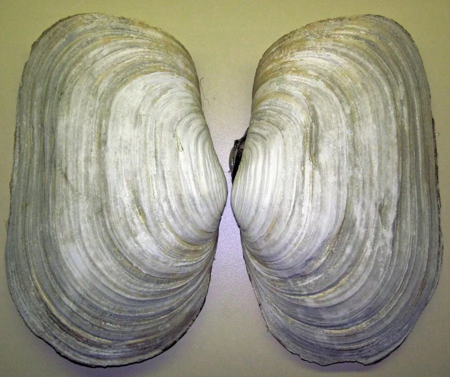

软体动物 · 动物界
象拔蚌 Panopea generosa

北美西海岸的大型蛤类，水管粗长如象鼻，可伸出壳外一米多，是寿司和刺身市场上颇受欢迎的名贵食材。
- 分类
- 门软体动物门纲双壳纲目海螂目科缝栖蛤科属海神蛤属
- 栖息环境
- 潮间带下区至水深数十米的沙泥底质海湾，泥沙深厚处
- 地理分布
- 北美洲西海岸，从阿拉斯加南部至加利福尼亚北部
- 保护级别
- 尚无专门评估；野生资源受捕捞强度和海湾污染影响
物种志
象拔蚌的贝壳呈长卵形，壳长约十五至二十厘米，壳质薄而脆，成体时两壳不能完全闭合，壳面呈黄白至灰褐色，有细密的生长纹，前端有宽大的开口，水管从这里伸出。它的水管特别发达，粗壮多肉，伸展时可达一米以上，末端分叉并生有许多小触手，用来滤食和呼吸。足部相对较小，身体大部分时间埋在泥沙中，只把水管伸出沙面。
它分布于北美洲西海岸，从阿拉斯加南部到加利福尼亚北部，栖息在潮间带下区至水深数十米的沙泥底质海湾，喜欢水流平缓、泥沙深厚的环境。它靠水管滤食浮游植物和有机颗粒，生长缓慢，寿命可达百年以上。由于肉质脆嫩、味道清甜，它是北美重要的商业捕捞种，也大量出口到亚洲市场，人工养殖已在部分地区开展。野生资源受捕捞强度和海湾污染影响，目前尚无专门的保护评估。
形态与习性
- 食性靠水管滤食浮游植物和有机颗粒
- 壳长约十五至二十厘米，壳薄且不能完全闭合
- 水管伸展可达一米以上，粗壮多肉
- 寿命生长缓慢，寿命可达百年以上
- 栖息深度潮间带下区至水深数十米的沙泥海湾
- 经济价值北美重要商业贝类，出口亚洲作刺身食材
趣味知识
- 象拔蚌的水管能伸到一米多长，远远看去像一根插在沙里的象鼻。
- 它生长极慢，一只几斤重的个体可能已经活了一百多年。
- 成体的两壳合不拢，身体缩不回壳里，只能靠深埋沙中来躲避敌害。